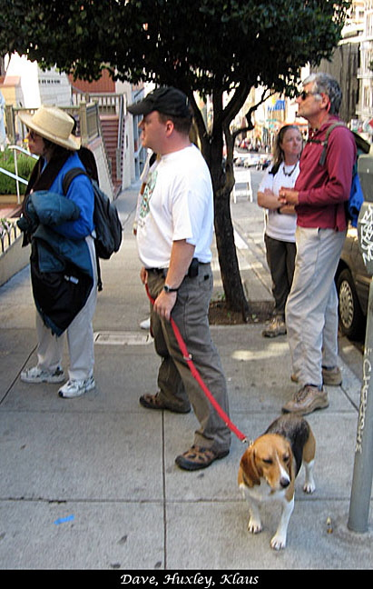

<--Previous Up Next-->

Sierra Club hike
A rare photo of Dave with Huxley, taken by a fellow Sierra Club hiker. We're on one of Jeanne Halpern's mosaic and tile art hikes, and here we're looking at a Ruth Asawa work, on Frenchman's Hill on Bush Street, which Dave happened to identify as such just a week before the hike.